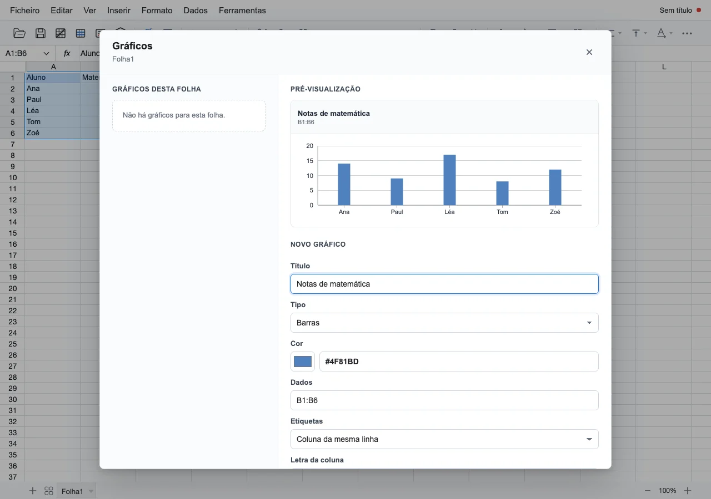
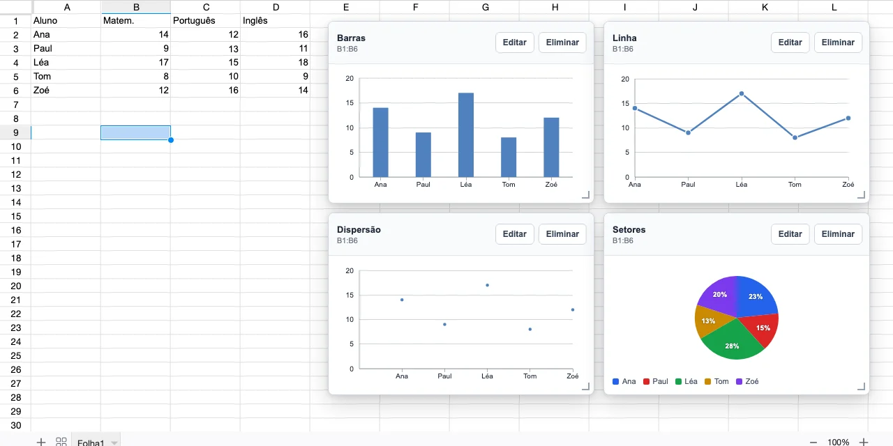
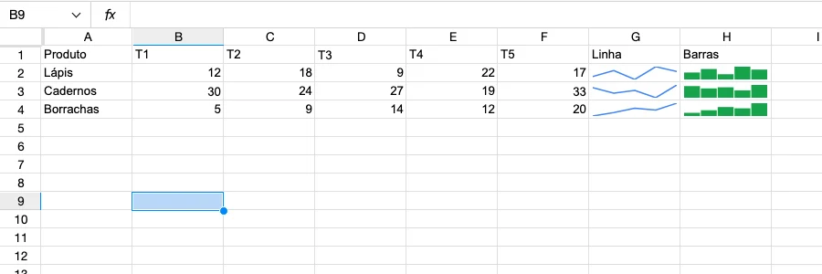

Gráficos e sparklines
Criar um gráfico
- Selecionar os dados.
- ou Inserir › Inserir gráfico.
- Escolher o tipo e as opções; a pré-visualização acompanha.
- Adicionar, depois Fechar.

| Seleção | Interpretação |
|---|---|
| uma coluna ou uma linha de números | os dados |
| duas colunas | etiquetas na primeira, dados na segunda |
| duas linhas | etiquetas na primeira, dados na segunda |
| duas colunas separadas, escolhidas com Ctrl | o mesmo |
Um gráfico mostra uma série: uma linha ou uma coluna de dados. As células sem número, como um cabeçalho, são ignoradas.
Tipos
| Tipo | Para | Etiquetas |
|---|---|---|
| Barras | comparar | sob as barras |
| Linha | uma evolução | em abcissa |
| Dispersão | uma relação entre duas grandezas | são as abcissas, se forem números; senão 1, 2, 3… |
| Setores | partes; valores positivos | na legenda ou nos setores |
Até 120 valores, 24 para os setores.

Opções
| Campo | Conteúdo |
|---|---|
| Título | obrigatório; mostrado no topo do gráfico |
| Cor | seletor ou código #4F81BD; os setores têm as suas próprias cores |
| Dados | o intervalo: B2:B6 |
| Etiquetas | Sem etiquetas; Coluna da mesma linha (A); Linha das mesmas colunas (1); Intervalo personalizado, do mesmo tamanho que os dados |
| Visualização | valores, legenda, abcissas, ordenadas, grelha |
Mover, modificar
- Arrastar a faixa do título move o gráfico; arrastar o seu canto inferior direito redimensiona-o.
- Editar reabre a janela, Eliminar elimina-o. A janela lista também todos os gráficos da folha.
- O gráfico acompanha os dados das suas células.
Os gráficos são guardados no ficheiro Excel como verdadeiros gráficos, e relidos pelo DocCells. Não são impressos com a folha.
Sparklines
A função SPARKLINE desenha um gráfico em miniatura na célula.
=SPARKLINE(B2:F2)
=SPARKLINE(B2:F2; {"charttype"\"column"})
=SPARKLINE(B2:F2; {"charttype"\"line"; "color"\"#dc2626"; "linewidth"\2})
=SPARKLINE(B2:F2; {"charttype"\"bar"; "max"\100})
As opções escrevem-se entre chavetas: o nome, uma barra invertida, o valor; um ponto e vírgula entre duas opções.
charttype | Desenho | Opções próprias |
|---|---|---|
"line" (predefinição) | linha | color, linewidth, xmin, xmax, ymin, ymax |
"bar" | barras empilhadas | max, color1, color2 |
"column" | colunas | color, negcolor, lowcolor, highcolor, firstcolor, lastcolor, axis, axiscolor, ymin, ymax |
"winloss" | ganhos e perdas | as mesmas, sem ymin nem ymax |
Opções comuns: empty ("zero" ou "ignore"), nan ("convert" ou "ignore"), rtl (da direita para a esquerda). A documentação de SPARKLINE dá todos os valores, com exemplos.
Para um desenho maior, aumentar a linha e a coluna, ou unir células.